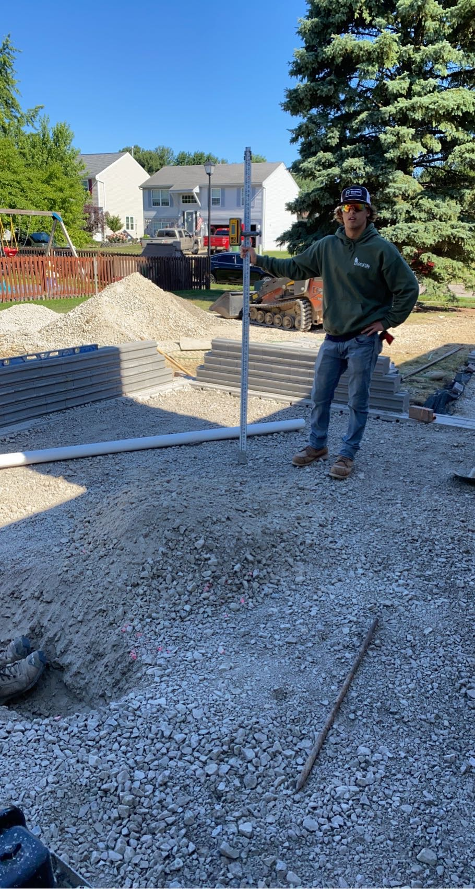

The art of a patio, a short blog about what makes patios so enjoyable.
Hi, my name is Tristan Lorincz and i'm a sophmore at Michigan State University studying information science. I play club water polo at MSU, and we are currently seeking a Big Ten title. Some hobbies of mine are skateboarding, skiing, swimming, as well as teaching myself the guitar. I worked construction on patios for two summers which is what prompted me to write this blog.

A patio is a structure usually on side, or behind a house that is on level with the ground. A patio is usually made from stone pavers that act as a walkway and area for recreation for a household. Often times a patio will have outdoor furniture, and other seeting availible to maximize comfort and enjoyability for those on it.
A patio has a straightforward contruction process that if followed correctly will produce a impressive area for residents to enjoy themselves. Patios can be created with or without the use of machines, but depending on if they are used or not, construction time will vary greatly.